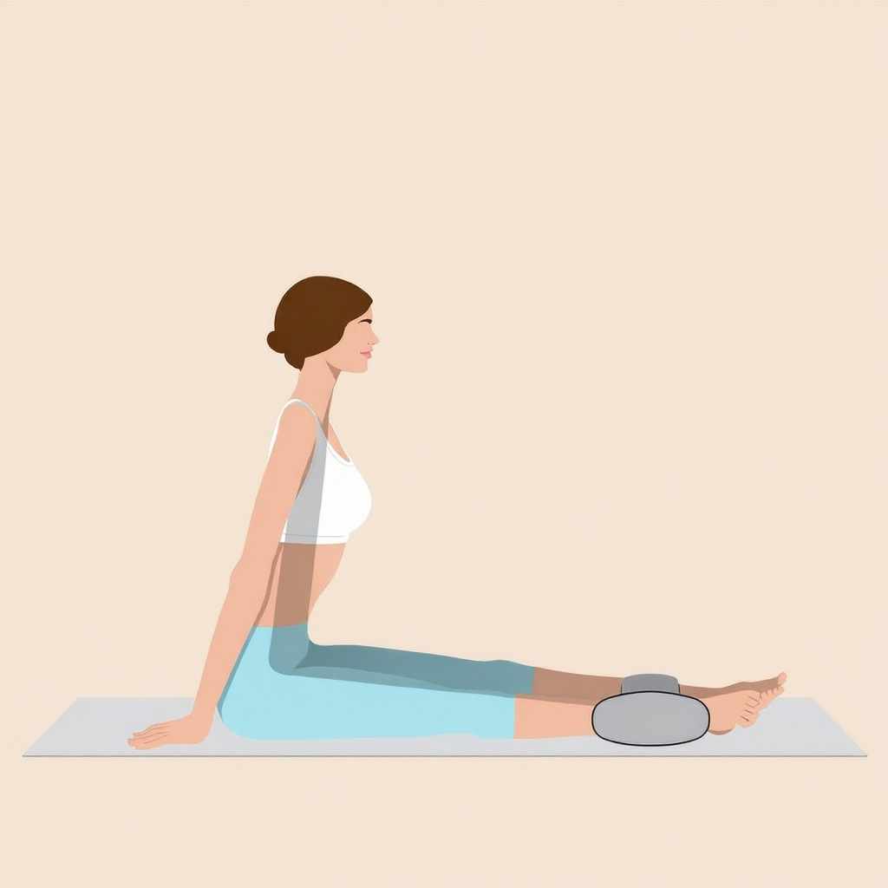

s321 (canny+controle, round 4)FINAL
Assise droite, jambe tendue, rouleau cylindrique isole sous la cheville avec un vrai PIED (5 orteils) dessus, main d'appui 5 doigts pres de la hanche. Fix : s34/round1-3 avaient soit une boule au lieu d'un cylindre, soit une main a la place du pied (retour Sophie).